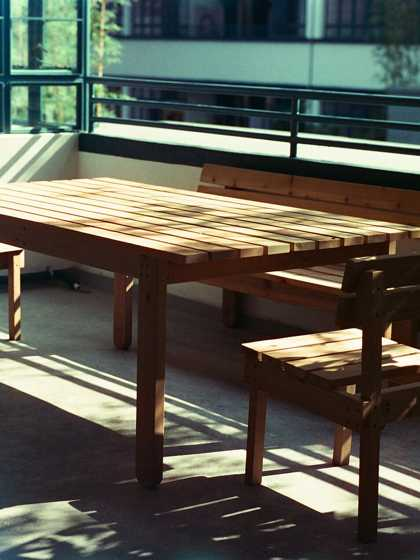
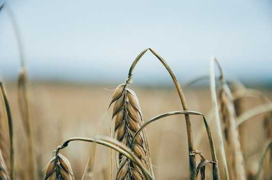
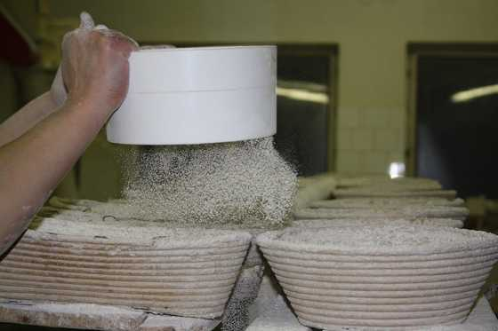
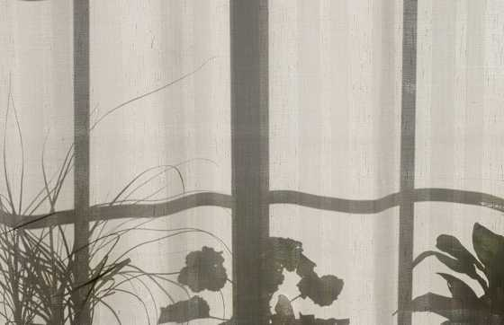
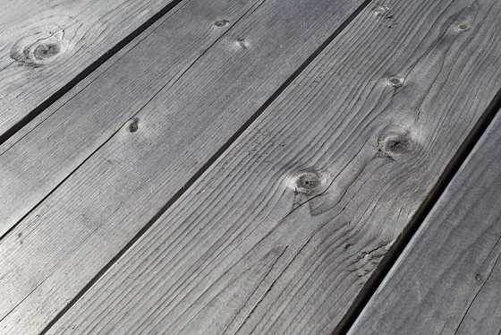
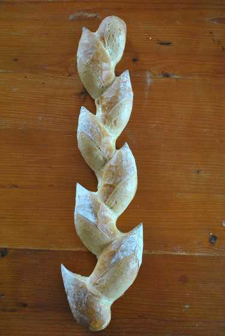
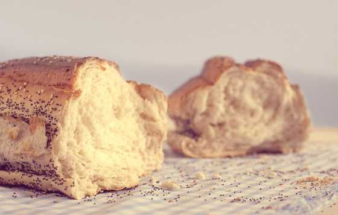
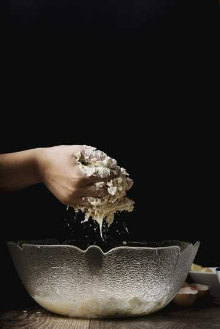
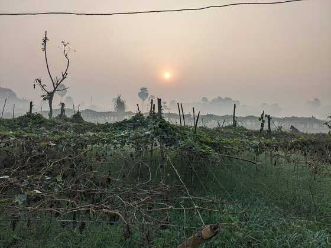

滋賀県高島市朽木
暖かなスローライフから生まれる、手づくりのパン。
ひだまり堂は、朽木市場にある手づくりパンのお店です。日なたのようなぬくもりのなかで焼かれるパンを、どうぞ。
※見出しの言葉は、紹介記事に載っているお店のコンセプト「暖かなスローライフから生まれる、こだわりの手づくりパン」をもとにしています。
お店について
朝市のパンから、自宅ショップへ。
紹介記事によると、ひだまり堂は奥様の長年の夢が形になったお店で、自宅を活かした可愛らしいショップで営業されています。手描きの看板やディスプレイにも、お店のこだわりと愛情が感じられると紹介されています。
- 2002年
朽木新本陣の日曜朝市でパンの販売を始める - その後
道の駅の売店でも販売 - 2013年
自宅ショップをオープン
出典: てづくりのパン『ひだまり堂』さん(高島市)(2014年時点の紹介記事)。店名の意味は確認できていないため、記載していません。




メニュー
手づくりのパンと、ひと休みのひととき。
2014年時点の紹介記事では、次のような内容が紹介されています。現在の取り扱いは変わっている場合があります。
口コミサイトなどでは、カレーパンやぶどうの食パンが話題に挙がっています(最新の取り扱いは未確認です)。営業日・営業時間・価格は、情報が古い可能性があるため「準備中」とし、Instagramでご確認ください。





口コミ
お客さまの声(イメージ例)
以下は制作側が作成したイメージ例で、実在のお客さまの声ではありません。
イメージ例焼きたてのパンの香りに、ほっとしました。手描きの看板もあたたかくて、また寄りたくなります。
来店されたお客さまのイメージ
イメージ例スープとパンでひと休み。ゆっくり流れる時間が心地よかったです。
イートインを利用したお客さまのイメージ
イメージ例朝市で買ったパンが忘れられず、お店にも足を運びました。素朴で毎日食べたくなる味です。
朝市で出会ったお客さまのイメージ
アクセス
お店の場所
| 住所 | 〒520-1401 滋賀県高島市朽木市場889-1 |
|---|---|
| 電話 | 準備中 |
| 営業日・時間 | 準備中(季節や都合によりお休みがあると紹介されています。Instagramでご確認ください) |
| @hidamari5884 |
